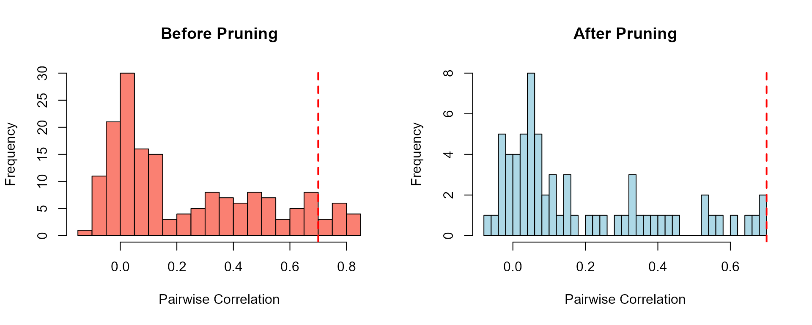
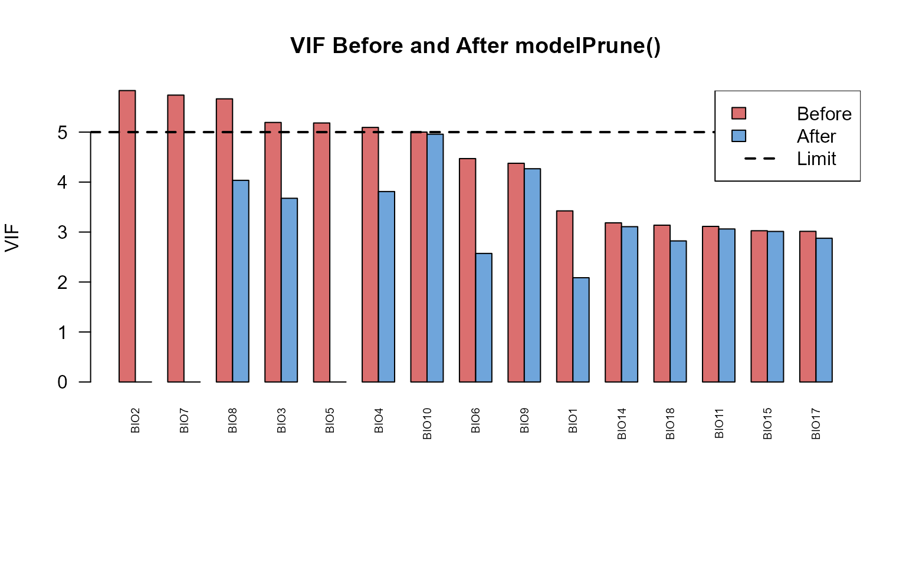

Quick Start: Predictor Pruning with corrselect
Gilles Colling
2025-11-24
Source:vignettes/quickstart.Rmd
quickstart.RmdLearning Objectives
After reading this 5-minute guide, you will be able to:
- Remove correlated predictors with
corrPrune() - Reduce multicollinearity with
modelPrune() - Understand when to use each approach
Prerequisites
- Basic R knowledge
- Familiarity with linear models (helpful but not required)
Estimated time: 5 minutes
The Problem
You have many predictors, but some are highly correlated. This causes:
- Unstable coefficient estimates
- Inflated standard errors
- Poor model interpretability
The solution: Remove redundant predictors before modeling.
Solution 1: Association-Based Pruning with
corrPrune()
When to use: You want to clean your data before modeling, or you don’t have a specific model in mind yet.
Example: Ecological Data
Let’s use the bioclim_example dataset with the 19
WorldClim bioclimatic variables:
library(corrselect)
data(bioclim_example)
# How many variables?
ncol(bioclim_example) - 1 # Exclude response variable
#> [1] 19Many of these variables are redundant. Let’s remove variables that correlate > 0.7:
# Remove correlated predictors
pruned <- corrPrune(
data = bioclim_example[, -1], # Exclude response variable
threshold = 0.7 # Max correlation allowed
)
# How many variables remain?
ncol(pruned)
#> [1] 12Result: Reduced from 19 → ~8 variables, all with pairwise correlations ≤ 0.7.
Visualize the improvement
par(mfrow = c(1, 2))
# Before pruning
cor_before <- cor(bioclim_example[, -1])
hist(cor_before[upper.tri(cor_before)],
breaks = 30,
main = "Before Pruning",
xlab = "Pairwise Correlation",
col = "salmon")
abline(v = 0.7, col = "red", lwd = 2, lty = 2)
# After pruning
cor_after <- cor(pruned)
hist(cor_after[upper.tri(cor_after)],
breaks = 30,
main = "After Pruning",
xlab = "Pairwise Correlation",
col = "lightblue")
abline(v = 0.7, col = "red", lwd = 2, lty = 2)
Key insight: All correlations are now below the threshold (red dashed line).
Solution 2: Model-Based Pruning with modelPrune()
When to use: You’re building a regression model and want to remove multicollinearity based on VIF (Variance Inflation Factor).
Example: Predicting Species Richness
Let’s build a model predicting species richness, but first remove multicollinear predictors:
# Prune predictors based on VIF
model_data <- modelPrune(
formula = species_richness ~ .,
data = bioclim_example,
limit = 5 # Max VIF allowed (common threshold)
)
# How many predictors remain?
length(attr(model_data, "selected_vars"))
#> [1] 16What happened?
# Predictors removed (high VIF)
attr(model_data, "removed_vars")
#> [1] "BIO2" "BIO7" "BIO5"
# Final model is ready to use
final_model <- attr(model_data, "final_model")
summary(final_model)
#>
#> Call:
#> stats::lm(formula = formula, data = data)
#>
#> Residuals:
#> Min 1Q Median 3Q Max
#> -10.1515 -2.8570 -0.2266 2.8122 13.3286
#>
#> Coefficients:
#> Estimate Std. Error t value Pr(>|t|)
#> (Intercept) -2.556e+02 3.719e+01 -6.874 1.08e-09 ***
#> BIO1 6.123e-01 1.356e-01 4.515 2.07e-05 ***
#> BIO3 -9.124e-02 1.824e-01 -0.500 0.6182
#> BIO4 -1.464e-01 1.909e-01 -0.767 0.4452
#> BIO6 1.896e-01 1.621e-01 1.170 0.2453
#> BIO8 1.506e-01 1.852e-01 0.813 0.4186
#> BIO9 2.781e-01 2.001e-01 1.390 0.1683
#> BIO10 -4.914e-01 2.104e-01 -2.336 0.0219 *
#> BIO11 9.878e-02 1.627e-01 0.607 0.5454
#> BIO12 2.994e-01 7.323e-03 40.884 < 2e-16 ***
#> BIO13 -1.997e-03 7.911e-03 -0.252 0.8013
#> BIO14 -3.675e-03 8.891e-03 -0.413 0.6804
#> BIO15 1.945e-01 9.652e-03 20.150 < 2e-16 ***
#> BIO16 5.817e-03 7.566e-03 0.769 0.4441
#> BIO17 2.802e-03 7.720e-03 0.363 0.7176
#> BIO18 6.126e-04 7.263e-03 0.084 0.9330
#> BIO19 -2.241e-03 6.560e-03 -0.342 0.7335
#> ---
#> Signif. codes: 0 '***' 0.001 '**' 0.01 '*' 0.05 '.' 0.1 ' ' 1
#>
#> Residual standard error: 4.785 on 83 degrees of freedom
#> Multiple R-squared: 0.985, Adjusted R-squared: 0.9821
#> F-statistic: 340 on 16 and 83 DF, p-value: < 2.2e-16Before/After VIF Comparison
Let’s compare VIF values before and after pruning:
# VIF before pruning (fit full model)
full_model <- lm(species_richness ~ ., data = bioclim_example)
# Compute VIF manually
X_full <- model.matrix(full_model)[, -1] # Remove intercept
vif_before <- sapply(colnames(X_full), function(var) {
1 / (1 - summary(lm(X_full[, var] ~ X_full[, -which(colnames(X_full) == var)]))$r.squared)
})
# VIF after pruning
X_pruned <- model.matrix(final_model)[, -1]
vif_after <- sapply(colnames(X_pruned), function(var) {
1 / (1 - summary(lm(X_pruned[, var] ~ X_pruned[, -which(colnames(X_pruned) == var)]))$r.squared)
})
# Visualize
par(mfrow = c(1, 2), mar = c(7, 4, 4, 2))
# Before pruning
barplot(sort(vif_before, decreasing = TRUE)[1:min(20, length(vif_before))],
las = 2,
main = "Before Pruning",
ylab = "VIF",
col = "salmon",
cex.names = 0.6,
names.arg = names(sort(vif_before, decreasing = TRUE)[1:min(20, length(vif_before))]))
abline(h = 5, col = "red", lwd = 2, lty = 2)
# After pruning
barplot(sort(vif_after, decreasing = TRUE),
las = 2,
main = "After Pruning",
ylab = "VIF",
col = "lightblue",
cex.names = 0.6,
names.arg = names(sort(vif_after, decreasing = TRUE)))
abline(h = 5, col = "red", lwd = 2, lty = 2)
Key insight: All VIF values are now below 5 (red dashed line), indicating acceptable multicollinearity.
Choosing Between corrPrune() and
modelPrune()
| Feature | corrPrune() |
modelPrune() |
|---|---|---|
| When to use | Before modeling | During model building |
| Requires response? | No | Yes |
| Based on | Pairwise correlations | Model diagnostics (VIF) |
| Speed | Very fast | Moderate (refits models) |
| Best for | Exploratory analysis | Regression prep |
Pro tip: Use both!
# Step 1: Quick correlation cleanup (exploratory)
data_cleaned <- corrPrune(your_data, threshold = 0.7)
# Step 2: VIF-based pruning (model-specific)
model_ready <- modelPrune(response ~ ., data = data_cleaned, limit = 5)Common Pitfalls
1. Choosing the wrong threshold
Too strict (e.g., threshold = 0.3): May remove too many useful variables
Too lenient (e.g., threshold = 0.95): Multicollinearity persists
Recommendation: Start with 0.7 for correlations, 5 for VIF
3. Pruning the response variable
Always exclude your response variable from
corrPrune():
# WRONG
pruned <- corrPrune(my_data, threshold = 0.7)
# RIGHT
pruned <- corrPrune(my_data[, -which(names(my_data) == "response")],
threshold = 0.7)Summary
You’ve learned:
-
corrPrune()removes correlated predictors (model-free) -
modelPrune()reduces VIF (model-based) - Use both for a complete workflow
- Check results with visualizations
In 5 minutes, you can now:
- Clean your data with
corrPrune() - Prepare models with
modelPrune() - Understand when to use each approach
Next Steps
-
More examples: See
vignette("workflows")for complete workflows across different domains -
Advanced features: See
vignette("corrselect_vignette")for exact subset enumeration -
Function reference: See
?corrPruneand?modelPrunefor full documentation
Quick Reference
# Association-based pruning
pruned <- corrPrune(
data = your_data,
threshold = 0.7, # Max correlation
mode = "auto", # "exact", "greedy", or "auto"
force_in = NULL # Variables to protect
)
# Model-based pruning
pruned <- modelPrune(
formula = y ~ .,
data = your_data,
engine = "lm", # "lm", "glm", "lme4", "glmmTMB"
limit = 5, # Max VIF
force_in = NULL # Variables to protect
)